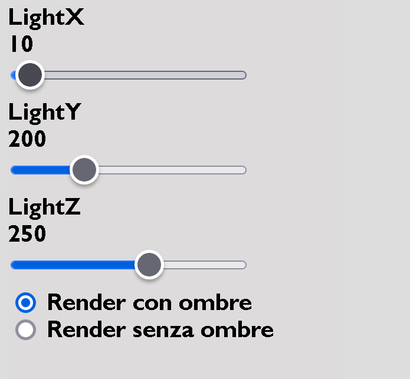
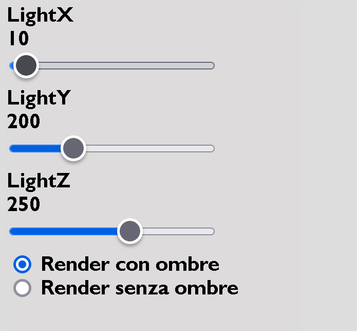

La piccola lumaca durante il suo giro di ricognizione per procacciarsi del cibo si imbatte in delle succulente piante di lattuga
che decide di far sue, pur andando incontro ai pericolosi pesticidi che si trovano in giro per il giardino. Una volta raccolte ad attenderla però
ci sarà il loro proprietario che per vendetta ha fatto prigioniero il miglior amico del nostro protagonista.
Lo scopo del gioco è di raccogliere la lattuga sul percorso della nostra lumaca che, una volta raccolta,
dovrà salvare il suo amico (formica) che sembra esser stato fatto prigioniero

Per la realizzazione della scena, sono state utilizzate diverse tecniche.
Prima di tutto è stato creato uno skybox tramite un cubo texturizzato adeguatamente e tramite la visone prospettica
quest'ultimo restituisce la sensazionedi profondità tramite l'applicazione di un immagine che rapesenta un orizzonte. Per il suolo è stata applicata una texture che
rappresenta un prato per renderlo quanto più realistico possibile. La dimesione del piano corrisponde alla dimensione della mappa, anche se non sono stati posti dei vincoli
per evitare che la lumaca esca dalla scena. Per concludere è stata disegnata un parete, alla quale è stata applicata una texture che rappresenta un muro di mattoni.
Nella scena possiamo trovare diverse Mesh 3D che sono state aggiunte importando i file .obj, mediante la funzione "loadOBJ()". La mesh principale, che rappresenta il protagonista è una lumaca, che è stata importata da un file .obj che ho trovato online e alla quale è stata applicata una texture semplice. Tra gli altri mesh troviamo le lattughe, il simbolo "toxic" che rappresenta i pesticidi, la formica che rappresenta il suo amico e i vari fiori per rendere più colorita tutta la scena. Tutte le Mesh prese in considerazione,sono state prese online e sono state ritoccate tramite Blender per renderle più adatte al gioco, tramite funzionalità di rescaling, rotazione e cutting.
Ad ogni oggeto della scena è stata applicata una texture seguendo gli esempi dei codici visti a lezione.
In particolare sono state utilizzate le funzioni "gl.createTexture()" e "gl.texImage2D()", che se possibile applica alle immagini
la tecnica del "mipmap" oppure vengono settati dei parametri standard per la sua gestione.
Le texture utilizzate sono per quasi tutte, immagini molto semplic, mentre per la lattuga e la formica sono state utilizzate texture più complesse,
derivanti da UV mapping di oggetti 3D realizzati tramite Blender.
Per concludere è stata applicata anche la texture di una foto personale ad un cubo, che rappresenta il "nemico" del nostro protagonista.

Per illuminare il mondo, è stata posta una luce sulla sommità della scena in modo da simulara una sorta di luce naturale.
Tale luce è costruita come una luce direzionale che, colpendo gli oggetti, grazie ad una depth_texture (che sfrutta
le coordinate di profondità), è in grado di determinare quali oggetti siano in ombra e quali no. Attraverso l'interazione l'utente può andare a modificare
i parametri della luce, e cioè la sua posizione rispetto agli assi x,y e z.
Si è poi stabilito un bias fisso che limiti il cosiddetto effetto "shadow acne", per quanto possibile.
Dal pannello di controllo è possible selezionare se renderizzare la scena con le ombre prodotte dagli oggetti oppure no.
Il problema principale di questo tipo di illuminazione sono le ombre: infatti esse risultano leggermente pixelate sia sugli oggetti,
sia nella loro proiezione prospettica sul piano, andando a resituire un risultato più che accettabile, ma restando comunque di bassa qualità.
Un possibile miglioramento, sarebbe quello di applicare un algoritmo di shading performante per riuscire a smussare i contorni delle ombre restituendo
un effetto più verosimile.
 

Il movimento della lumaca ricalca quello di una macchina, traendo ispirazione dagli esempi visti a lezione. In più sono state gestiti i vari eventi che
comprendono il movimento della lumaca, come la collisione con gli oggetti e la fine del gioco. Tutto questo è stato realizzato in un file a parte chiamato SnailMovement.js.
Sono state implementate due tipologie di collisioni: una positiva, che viene utilizzata per la raccolta della lattuga e per salvare il nostro amico; quella negativa,
che viene utilizzata per la collisione con i nostri "adversary", le sostanze tossiche e il nemico finale. Alla lattuga e alle sostanze tossiche sono state applicate delle animazioni di rotazione
tramite la "utils" m4.js, che vanno a ruotare la matrice.

L'interfaccia è composta dal canvas dove viene visualizzata la scena, una piccola insersione laterale dove vengono spiegate le regole del gioco e quali tasti utilizzare, una serie di button e sliders per gestire ombre, luce e visuale.
L'applicazione è utilizzabile sia da desktop che da mobile.
Nella versione desktop per muovere per muovere la lumaca utilizziamo la classica combinazione di comandi WASD, che fanno muovere la lumaca rispettivamente:
avanti, sinistra, indietro e a destra.
Per muovere la visuale della camera, invece, è possibile utilizzare il mouse, che permette di muovere la visuale in tutte le direzioni, ma anche le freccie direzionale,
con maggiore accuratezza.
I bottoni presenti permettono di orientare la camera in tre posizioni. Dietro il muose, di fronte al mouse e infine una visuale
dall'alto per avere tutta la scena sotto controllo.
Gli slider danno la possibilità all'utente di mouvere la posizione della luca nelle tre direzioni x,y,z. Questa funzione risulta
utile e più chiara, se combinata con la selezione di mostrare le ombre prodotte dagli oggetti sulla scena.
Infatti è inoltre possibile selezionare se renderizzare la scena con le ombre o meno.
Per ovviare alla mancanza della tastiera durante il gioco nella versione mobile, sulla sinistra della canvas sono stati posti
quattro bottoni che permettono di muoversi nella scena.
La posizione di questi quattro bottoni è stata quindi scelta apposta per fare in modo che il giocatore possa
impugnare lo smartphone e utilizzare i pollici di entrambe le mani, come fosse un joystick di una console di gioco.
Mentre sulla destra della canvas sono stati inseriti quattro bottoni che permettono di spostare la camera.

Come già discusso sono state impiegate diverse librerie come supporto. Le librerie in questione "webgl-lessons-ui.js" e "m4.js" sono state riprese dalle lezioni e sfruttate per velocizzare la scrittura del codice. La prima principalmente usata in maniera facile e veloce per inserire lo slider nel canvas ha grandi potenzialità nell'interazione con l'utente. Mentre la seconda è stata usata per semplificare molti calcoli tra matrici, fondamentali nello sviluppo del codice.